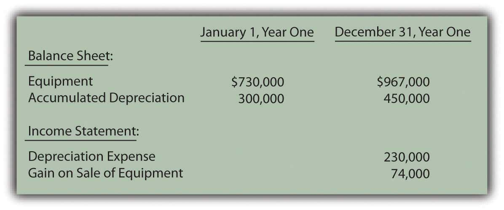
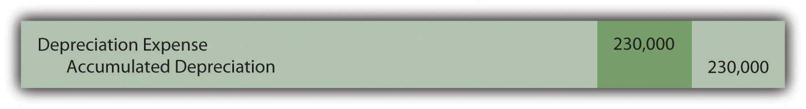
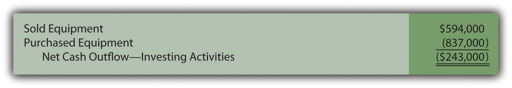
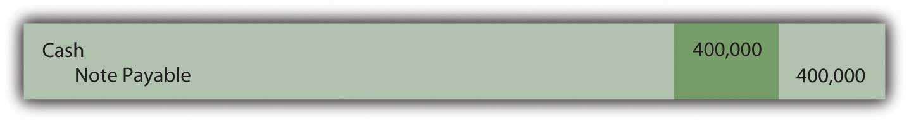
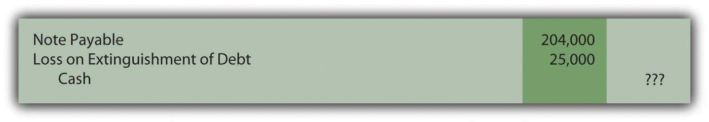
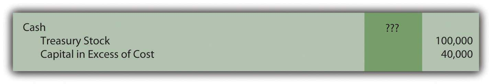
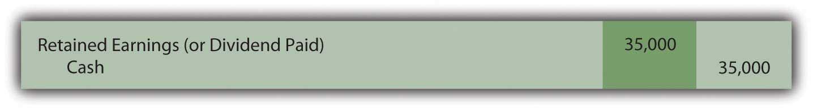

At the end of this section, students should be able to meet the following objectives:
Question: For the year ended September 27, 2008, The Walt Disney Company reported the net outflow of over $2.1 billion in cash as a result of its investing activities during that period (all numbers in millions):
Figure 17.9 The Walt Disney Company Investing Activity Cash Flows for Year Ended September 27, 2008

This portion of Disney’s statement of cash flows shows that a number of nonoperating asset transactions created this $2.1 billion reduction in cash. Information about management decisions is readily available. For example, a potential investor can see that officials chose to spend cash of almost $1.6 billion during this year in connection with Disney’s parks, resorts and other property. Interestingly, this expenditure level is almost exactly the same as the monetary amount invested in those assets in the previous year. With knowledge of financial accounting, a portrait of a business and its activities begins to become clear.
After the cash amounts are determined, conveyance of this information does not appear particularly complicated. How does a company arrive at the investing activity figures that are disclosed within the statement of cash flows?
Answer: In most cases, an accountant takes the ledger account for each nonoperating asset (land, buildings, equipment, patents, trademarks, and the like) and investigates the individual transactions that took place during the year. The amount of every cash change is identified and reported. A cash sale of land creates an inflow whereas the acquisition of a building probably requires the payment of some cash.
The difficulty in this process can come from having to sort through multiple purchases and sales to compute the exact amount of cash involved in each transaction. At times, determining these cash effects resembles the work required to solve a puzzle with many connecting pieces. Often, the accountant must replicate the journal entries that were made originally. Even then, the cash portion of these transactions may have to be determined by mathematical logic. To illustrate, assume that a company reports the following account balances.
Figure 17.10 Account Balances for Illustration Purposes
In looking through business records for Year One, assume that the accountant finds two additional pieces of information about the above accounts:
Sale of equipment. This transaction is analyzed first because the cost of the equipment is already provided. However, the accumulated depreciation relating to the disposed asset is not known. The accountant must study the available data to determine that missing number because that balance is also removed when the asset is sold.
Accumulated depreciation at the start of the year was $300,000 but depreciation expense of $230,000 was then reported as shown above. This expense was recognized through the following year-end adjustment.
Figure 17.11 Assumed Adjusting Entry for Depreciation
The entry here increases the accumulated depreciation account to $530,000 ($300,000 plus $230,000). However, the end balance is not $530,000 but only $450,000. What caused the $80,000 drop in this contra asset account?
Accumulated depreciation represents the cost of a long-lived asset that has already been expensed. Virtually the only situation in which accumulated depreciation is reduced is the disposal of the related asset. Here, the accountant knows that equipment was sold. Although the amount of accumulated depreciation relating to that asset is unknown, the assumption can be made that it is equal to this reduction of $80,000. No other possible decrease in accumulated depreciation is mentioned.
Thus, the accountant believes equipment costing $600,000 but with accumulated depreciation of $80,000 (and, hence, a net book value of $520,000) was sold for an amount resulting in the $74,000 gain that is shown in the reported figures presented above.
A hypothetical journal entry can be constructed from this information.
Figure 17.12 Assumed Journal Entry for Sale of Equipment

This journal entry only balances if the cash received is $594,000. Equipment with a book value of $520,000 was sold during the year at a reported gain of $74,000. Apparently, $594,000 was received. How does all of this information affect the statement of cash flows?
Purchase of equipment. According to the information provided, another asset was acquired this year but its cost is unavailable. Once again, the accountant must puzzle out the amount of cash involved in the transaction.
The equipment account began the year with a $730,000 balance. The sale of equipment costing $600,000 was just discussed. This transaction should have dropped the ledger account total to $130,000 ($730,000 less $600,000). However, at the end of the period, the balance reported for this asset is actually $967,000. How does the cost of equipment grow from $130,000 to $967,000? If no other transaction is mentioned, the most reasonable explanation is that equipment was acquired at a cost of $837,000 ($967,000 less $130,000). Unless information is available indicating that part of this purchase was made on credit, the journal entry that was recorded originally must have been as follows.
Figure 17.13 Assumed Journal Entry for Purchase of Equipment

At this point, the changes in all related accounts (equipment, accumulated depreciation, depreciation expense, and gain on sale of equipment) have been utilized to determine the two transactions for the period and the cash inflows and outflows. In the statement of cash flows for this company, the investing activities are listed as follows.
Figure 17.14 Statement of Cash Flows Investing Activities
Link to multiple-choice question for practice purposes: http://www.quia.com/quiz/2093020.html
Link to multiple-choice question for practice purposes: http://www.quia.com/quiz/2093022.html
Link to multiple-choice question for practice purposes: http://www.quia.com/quiz/2093000.html
Question: For the year ended December 28, 2008, Johnson & Johnson reported a net cash outflow from financing activities of over $7.4 billion. Within its statement of cash flows, that total was broken down into seven specific categories (all numbers in millions).
Figure 17.15 Financing Activity Cash Flows Reported by Johnson & Johnson for Year Ended December 28, 2008

In preparing a statement of cash flows, how does a company such as Johnson & Johnson determine the amounts that were paid and received as a result of its various financing activities?
Answer: As has been indicated, financing activities reflect transactions that are not part of a company’s central operations and involve either a liability or a stockholders’ equity account. Johnson & Johnson paid over $5 billion in cash dividends and nearly $6.7 billion to repurchase common stock (treasury shares). During the same period, approximately $8.4 billion in cash was received from borrowing money on short-term debt and another $1.6 billion from long-term debt. None of these amounts are directly associated with the company’s operating activities. However, they do involve liabilities or stockholders’ equity and are appropriately reported as financing activities.
The procedures used in determining cash amounts to be reported as financing activities are the same as demonstrated for investing activities. The change in each nonoperating liability and stockholders’ equity account is analyzed. The recording of individual transactions can be replicated so that the cash effect is isolated.
To illustrate, various account balances for the Hastings Corporation are presented in the following schedule.
Figure 17.16 Account Balances for Illustration Purposes

In examining records for the Hastings Corporation for this year, the accountant finds several additional pieces of information:
Once again, the various changes in each account balance can be analyzed to determine the cash flows, this time to be reported as financing activities.
Borrowing on note payable. Complete information about this transaction is available. Hastings Corporation received $400,000 in cash by signing a note payable with a bank. The journal entry to record the incurrence of this liability is assumed to be as follows.
Figure 17.17 Assumed Journal Entry for Signing of Note Payable
On a statement of cash flows, this transaction is listed within the financing activities as a $400,000 cash inflow.
Paying note payable. Incurring the above $400,000 debt raises the note payable balance from $680,000 to $1,080,000. By the end of the year, this account only shows a total of $876,000. Reported notes payable have decreased in some way by $204,000 ($1,080,000 less $876,000). The information gathered by the accountant indicates that a debt was paid off this year prior to maturity. In addition, the general ledger reports a $25,000 loss on the early extinguishment of a debt. Once again, the journal entry for this transaction can be recreated by logical reasoning.
Figure 17.18 Assumed Journal Entry for Extinguishment of Debt
To balance this entry, cash of $229,000 must have been paid. Spending this amount to settle a $204,000 liability does create the $25,000 reported loss. This cash outflow of $229,000 relates to a liability and is thus listed on the statement of cash flows as a financing activity.
Issuance of treasury stock. This equity balance reflects the cost of repurchased shares. During the year, the total in the T-account fell by $100,000 from $400,000 to $300,000. Apparently, $100,000 was the cost of the shares reissued to the public. At the same time, the capital in excess of cost balance rose from $120,000 to $160,000. That $40,000 increase in contributed capital must have been created by this sale. The shares were sold for more than their purchase price.
Figure 17.19 Assumed Journal Entry for Sale of Treasury Stock
If the original cost of the treasury stock was $100,000 and an amount $40,000 in excess of cost was recorded, the cash inflow from this transaction was $140,000. Cash received from the issuance of treasury stock is reported as a financing activity of $140,000 because it relates to a stockholders’ equity account.
Distribution of dividend. A dividend has been paid but the amount is not shown in the information provided. Net income was reported as $200,000. Those profits always increase retained earnings. As a result, the beginning balance of $454,000 should increase to $654,000. Instead, retained earnings only rose to $619,000 by the end of the year. The unexplained drop of $35,000 ($654,000 less $619,000) must have resulted from the payment of the dividend. No other possible reason is given for this reduction. Hence, a cash dividend distribution of $35,000 is shown within the statement of cash flows as a financing activity.
Figure 17.20 Assumed Journal Entry for Payment of Dividend
In this example, four specific financing activity transactions have been identified as created changes in cash.
Figure 17.21 Statement of Cash Flows Financing Activities

All the sources and uses of this company’s cash (as it related to financing activities) are apparent from this schedule. Determining the cash amounts can take some computation but the information is then clear and useful.
Link to multiple-choice question for practice purposes: http://www.quia.com/quiz/2093001.html
Link to multiple-choice question for practice purposes: http://www.quia.com/quiz/2093002.html
To determine cash flows from investing activities, the accountant must analyze the changes that have taken place in each nonoperational asset such as buildings and equipment. Journal entries can be recreated to show the amount of any cash inflow or cash outflow. For financing activities, a similar process is applied to each nonoperational liability (notes and bonds payable, for example) and stockholders’ equity accounts. Once all changes in these accounts have been determined, the statement of cash flows can be produced.
Following is the conclusion of our interview with Kevin G. Burns.
Question: Many investors watch the movement of a company’s reported net income and earnings per share and make investment decisions based on increases or decreases. Other investors argue that the amount of cash flows generated by operating activities is really a more useful figure. When you make investing decisions are you more inclined to look at net income or cash flows generated by operating activities?
Kevin Burns: As I have said previously, net income and earnings per share have a lot of subjectivity to them. Unfortunately, cash flow information can be badly misused also. A lot of investors seem fascinated by EBITDA which is the company’s earnings before interest, taxes, depreciation, and amortization. I guess you could say that it is kind of like blending net income and cash flows. But, to me, interest and taxes are real cash expenses so why exclude them? The biggest mistake I ever made as an investor or financial advisor was putting too much credence in EBITDA as a technique for valuing a business. Earnings are earnings and that is important information. A lot of analysts now believe that different cash flow models should be constructed for different industries. If you look around, you can find cable industry cash flow models, theater cash flow models, entertainment industry cash flow models, and the like. I think that is a lot of nonsense. You have to obtain a whole picture to know if an investment is worthwhile. While cash generation is important in creating that picture so are actual earnings and a whole lot of other financial information.